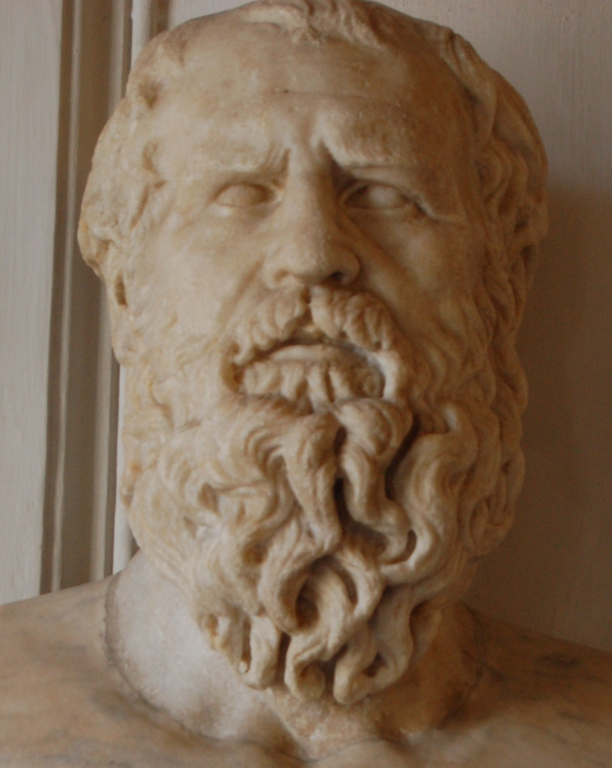

Heraclitus (c. 535-475 BC)

Heraclitus (flourished around 500 BCE) was an ancient Greek philosopher from Ephesus, a city on the coast of Asia Minor that was part of the Persian Empire at the time. He was one of the most influential Pre-Socratic philosophers, known for his ideas about change, the nature of reality, and the relationship between opposing forces. Although little is known about his personal life, his philosophy influenced many later thinkers, including Plato, Aristotle, and philosophers of the modern era.
The central idea of Heraclitus' philosophy was that everything is constantly changing. He believed that nothing in the world remains exactly the same because life and nature are always moving and developing. This idea is often associated with the famous saying, "No one ever steps into the same river twice." The river continues to flow, so its water changes, and the person stepping into it also changes over time. Through this example, Heraclitus explained that change is a natural and unavoidable part of existence.
Another important part of his philosophy was the unity of opposites. Heraclitus believed that opposing forces, such as day and night, life and death, or war and peace, were connected and helped create balance in the world. He argued that conflict was not always destructive; in some cases, the tension between opposites was necessary for harmony and order. In his view, the world functioned through the continuous interaction of these forces.
Heraclitus also believed that fire was the fundamental element of the universe. He chose fire because it represents constant transformation, as it consumes materials and changes them into something else. He also used the concept of Logos, a Greek word associated with reason, speech, or an underlying principle, to describe the order that governs the universe. Although everything changes, Heraclitus believed that this deeper principle helps explain how the world remains organised.
Heraclitus was known for expressing his ideas through short, mysterious statements that were often difficult to understand. Because of this, ancient writers gave him nicknames such as "the Dark" and "the Obscure." He was also sometimes called the "Weeping Philosopher," reflecting the traditional image of him as a serious and pessimistic thinker. His original writings have mostly been lost, and his philosophy survives through fragments quoted by later authors.
Heraclitus' ideas remain important because they encouraged people to think differently about reality and the role of change in human life. His belief that the world is always in motion influenced centuries of philosophical debate and offered a different perspective from thinkers such as Parmenides, who argued that true reality was unchanging.